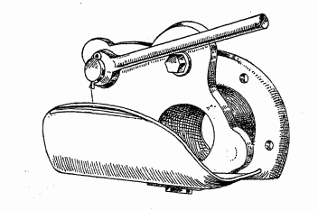
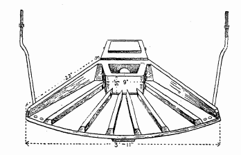

In all parts of this country there is a considerable waste of liquid manure from byres, stalls and piggeries, as well as of drainage from the manure heap. If it were possible to get the greater portion of this applied to the land it would result in an enormous increase in crop production, and at the same time effect a great saving in the use of artificial manures.
The following Table shows the equivalent quantities of artificial manures required to supply the same amount of nitrogen, phosphate and potash as is contained in one ton pure cow urine. For the purpose of comparison the amounts are also stated for one ton well rotted farmyard manure of good quality : -
TABLE.
| Quantity and kind of Manure. | Nitrate of Soda required to supply an equivalent aniounc of nitrogen. | Superpliosptiate (35 per cent, soluble phosphate) required to supply an equivalent ammmt of phos- phate. | Kainit required to supply an equivalent amount of potash. |
|---|---|---|---|
| One ton pure cow urine | 1 owt. | 3/4 cwt. | 1 cwt. |
| One ton farmyard manure | 2/3 cwt. | 1/3 cwt. | 1 cwt. |
Although the manurial ingredients in liquid manure are as readily available as those in the artificial manures mentioned in the Table, too close a comparison cannot be drawn from the figures given, because urine suffers loss in storage and application, more- over, it is seldom applied pure. The drainage from the manure heap is not only rich in the valuable manurial ingredients, viz., nitrogen, phosphate and potash, but it contains the soluble and, therefore, the most valuable part of these constituents. It is not necessary to dilate on the value of liquid manure as a fertiliser. It proclaims its own good properties in no uncertain manner where it is allowed to flow over a pasture or meadows
With a view to obtaining definite information as to the value of liquid manure compared with (a) farmyard manure, and (b) a complete dressing of artificial manures applied to the hay crop, a large number of experiments have been carried out on the Department’s farms and by Agricultural Instructors and Agricultural Overseers in many parts of Ireland.
The results of the experiments made by Instructors and Over- seers during the four seasons 1911-14 are summarised in the following Table : —
| Plot. | Manures applied per Statute acre. | Average of 249 centres, 4 years 1911-14. | |
|---|---|---|---|
|
Yield of hay per statute acre. T.C.Q |
Increase due to Manures.
T.C.Q |
||
| 1 | No manure .... | 2 1 0 | ---- |
| 2 | 16 tons farmyard manure ... | 2 16 3 | 0 15 3 |
| 3 | 16 tons liquid manure | 2 17 3 | 0 16 3 |
| 4 |
1 cwt nitrate of soda 2 cwt. superphosphate 2 cwt. kainit} |
2 16 3 | 0 15 3 |
It will be seen that the three manurial dressings produced very similar results, but that slightly the heaviest average yield has been obtained from the plot to which liquid manure was applied.
The results have been very uniform in the different years, and it is interesting to irote that liquid manure has proved equally satisfactory in wet and dry seasons. The tests w'ere made with first crop, second crop and meadow hay.
Everywhere the value of well-made farmyard manure is realised, and the advantages to be derived from the application of a suitable mixture of artificial manures to the hay crop are now almost equally well known, but farmers generally do not recognise that liquid manure is as valuable a fertiliser as has been proved by this experiment.
Different systems are in use throughout the country for dealing with liquid manure : —
The method of direct application is that recommended by the Department, and on most farms a concrete tank would provide the most convenient means of collecting the liquid.
In deciding as to the size of the tank required it is usual to allow a capacity of not less than 50 gallons per .head of stock. A tank constiucted on this basis Aviil hold the supply collected during several weeks, together with the water which is used for washing out the byres and piggeries.
If, for example, the farm stock comprised 40 head of cattle and horses a tank capable of holding 2,000 gallons would be required. As a cubic foot of liquid represents about 6 J gallons the size of the tank necessary can be readily arrived at by dividing the capacity in gallons by Oj, Tlius 40x50=320 cubic feet. To construct such a tank the length multiplied by the breadth multiplied by the depth must equal 820 cubic feet. Tliis capacity would be obtained by a tank measuring 10 feet long by feet wide by 5 feet deep =325 cubic feet. A plan and section of a tank of this capacity constructed of concrete composed of 5 parts clean sharp gravel to 1 part best Portland cement and covered with planks are shown below.
In some cases, however, it might be more economical to build the walls of 9- inch biick-work and render inside with cement mortar composed of 2 parts clean sand to 1 part best Portland cement.
It is important that the depth of the tank should be measured from the underside of the inflow pipe and not from the ground level.
On large farms a cart of some description will be necessary for conveying the liquid to the fields. Specially made liquid manure carts for this purpose can be purchased, but it is not necessary to incur this expense. A barrel of 100 gallons capacity fixed on the wheels, axle and shafts of a cart will suit the purpose admirably. Distribution can be effected by means of a V-shaped trough attached to the end of the cart. The trough should be perforated at regular intervals to ensure that the liquid is spread evenly as the cart is moved forward. A pump on the endless chain principle is the best system of emptying the liquid from the tank into the cart.
On small farms where the cost of the tank, pump and cart would be regarded as prohibitive, a barrel with a spigot (or plug) at the bottom standing in an ordinary cart with the trough attachment could be used for distributing the liquid.Two types'of distributing attachments are shown below.
This type of distributor is that mainly used on the Continent. The attachment is fixed on to the back of a long barrel of wood or iron. The liquid flows against the curved plate, and is more evenly distributed than by any other arrangement. The difficulty, however, is to maintain a uniform pressure in the outflow when
In this illustration the attachment is shown with the pipe open and ready for use ; when the handle is moved round the pipe is closed and the supply from the barrel is shut off.
This type of distributor is seen attached to a cart in Fig. 1. The liquid flows from the machine into a box ajrd escapes along the bottom on to a spreading board on which pieces of wood are nailed to ensure even distribution. The attachment as illustrated was supplied by Messrs. T. Baker & Sons, Compton, Berks.
Two carts .with different methods of spreading liquid manure, which are in use at the Albert Agricultural College, Glasnevia, Dublin, are shown as Figs. 1 and 2.
Liquid manure is constantly accumulating, and as the facilities for storage are usually limited it cannot, like farmyard manure, be. held over for an indefinite period. It is, therefore, necessary to empty the tank periodically, especially during winter and spring.
At these seasons the choice of crops to which liquid manure can be applied is limited, but there is no crop that responds more freely than first crop hay, and this is available from the time the corn is harvested until May. Moreover, liquid manure can be applied with great success in early spring to autumn sown catch crops, and particularly to Italian rye-grass.The effect of one or more liberal dressings during February and March is to force on the crop and to ensure a heavy cutting in April or early in May when green food is most valuable.
Liquid manure is well suited for cabbages, mangels, pasture, catch crops, Italian rye-grass and meadows. In spring applications can be given with great advantage to cabbages, and later in the season to mangels, while for meadows dressings may be given up to the middle of May. Good results are obtained from liquid manure applied in winter and spring to pastures. It pro- duces a dense growth of succulent herbage which is readily eaten by all kinds of stock.
The experiments already referred to indicate that for the hay crop at least as good results may be expected from the application of liquid manure as from the same weight of dung. Other tests have shown that excellent results are obtained by applying liquid manure to the other crops mentioned.
In view of these facts it is hoped that the value of this fertiliser will become more widely appreciated, and that farmers will not hesitate to incur the small expenditure involved in the collection and application of the liquid manure which, under existing conditions, is so often entirely lost.
Copies of this article in leaflet form (No. 12) May be obtained free of charge and post free, on application to the Secretary, Department of Agriculture and Technical Instruction for Ireland, Upper Merrion Street, Dublin, Letters of application so addressed need not be stamped.